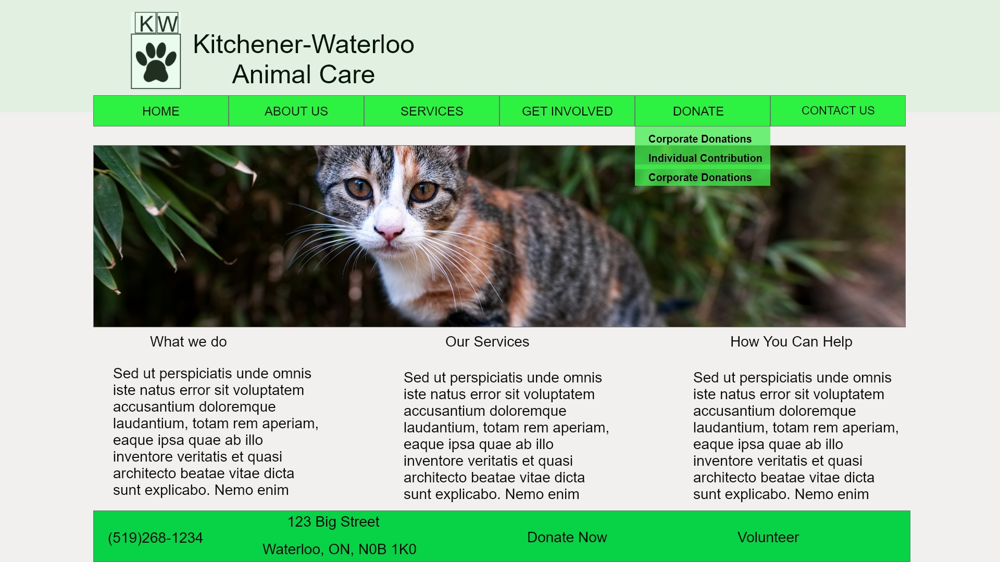

Tasked with creating a homepage for an animal shelter in the Kitchener-Waterloo area. The homepage had to include a navbar that provides all the information for visitors and users of the site that they would need to use for various services and opportunities that they provide and offer.